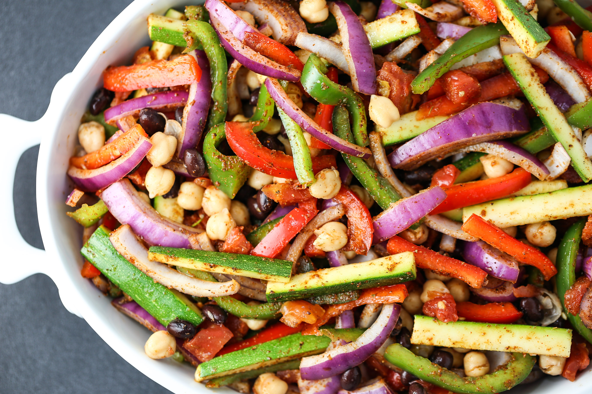

Fajitas Recipe

Description
This quick and easy dish has various ways to make it and is delicious
every time! You can you chicken, steak, or keep it all veggies. It is easy
to enjoy by itself or with a peice of tortilla. Below is the recipe for chicken fajitas.
Ingredients
- Chicken: 3/4 lb.
- Olive oil: 2 tablespoons.
- Lime Juice: 1 tablespoon.
- Garlic Clove: finely minces.
- Chilli powder: 1/2 tablespoon.
- Cumin: 1/2 tablespoon.
- Hot pepper Flakes: 1/2 teaspoon.
- Black pepper: 1/2 teaspoon.
- Salk: 1/2 teaspoon.
- Flour tortilla: 8
- Onion: 1-2 depending on size.
- Small sweet peppers: green, red, or orange.
Steps:
- Slice chicken into small strips.
- In a bown, mix together 1 tablespoons olive oil, lime juice, garlic, chilli powder, cumin, hot pepper flakes, black pepper, and salt
- Add chicken strips.
- Wrap tortilla in foul and place in 350 overn for 5-10 mins.
- Cut onions in half lenghtwise and slice into strips, cut your peppers into strips.
- In a large non stick skiller over medium heat, heat reamaining olive oil.
- Add onions and peppers stirring for 3-4 minutes, until softened; transfer to a bowl and set aside.
- Add chicken to skillet, cook, stirring for 3-4 min.
- Return onions and peppers to skillet; stir for about 1 min.
- To serve, spoon a portion of the beef mixure down the centre of each tortilla, top with you desired toppings, fold bottom fo tortilla up over fillin, fold the sides in, overlapping.